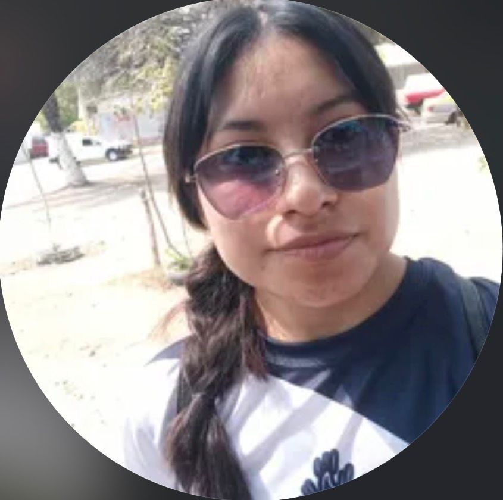

El equipo detrás del proyecto
Williams Espinosa López
Mobile & DevOps Engineer
SARC es una aplicación móvil que permite reportar incidencias urbanas como baches, basura, alumbrado dañado o infraestructura deteriorada con una foto y tu ubicación GPS en segundos.
Las autoridades reciben los reportes en tiempo real, los gestionan desde un mapa interactivo y actualizan su estado para que siempre sepas qué pasa con tu reporte.
Ver en GitHubCaptura una fotografía del problema, agrega una descripción y la app registra automáticamente tu ubicación exacta para que las autoridades sepan dónde ir.
Los administradores visualizan todos los reportes sobre un mapa interactivo filtrable por categoría y estado, facilitando la priorización y atención oportuna.
Consulta el estado de tu reporte en cualquier momento: Pendiente, En Proceso o Resuelto. Recibe una notificación cuando tu incidencia sea atendida.
